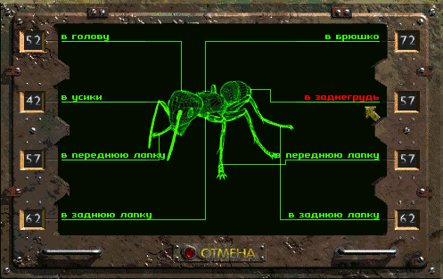
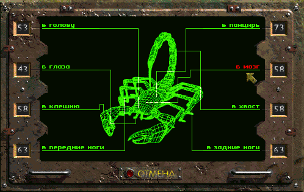

Грогнак
Моя Грогнак. Моя Выбранный... Моя Избранный. И моя отправляться в Храм Опусканий... Моя отправляться в Храм Испытаний.

Первое препятствие, что преградило путь нашему... "герою"...
Грогнак: Твоя не бояться? *возмутившись, Грогнак встаёт в боевую стойку для нанесения удара в пах*О'кей, о'кей, ну ладно. Так, о чём это я?
...герою ещё не наступивших дней, было причащено к экстерминатусу в свойской лишь ему манере.

Giant Ant is dead.
Следующим членистоногим счастливцем, причастившимся к экстерминатусу, был

Scorpion not win.
Грогнак: Е-е-а-а-грх! Моя доминировать над глупыми обитателями Храма! Грогнак бить в пах! Грогнак бить пах! *воодушевлённо Грогнак, снося дверь в следующий зал Храма, помчался к выходу*